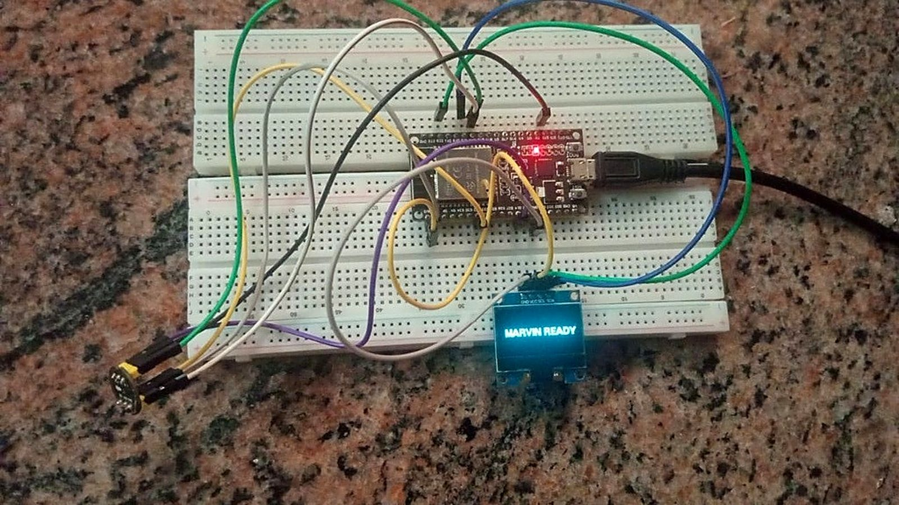
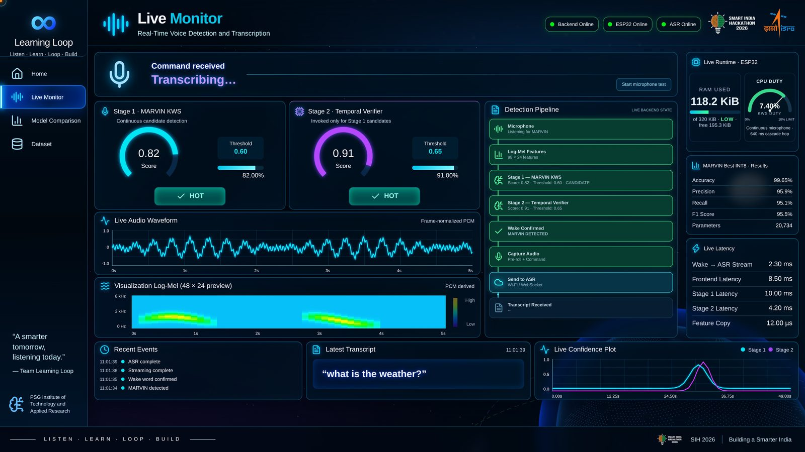
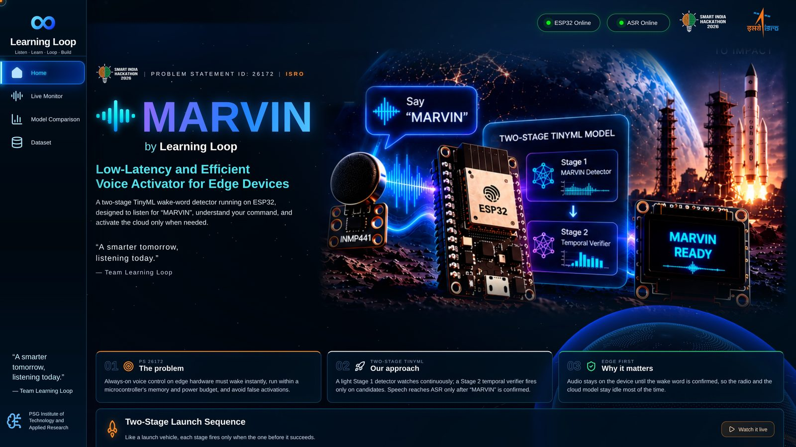
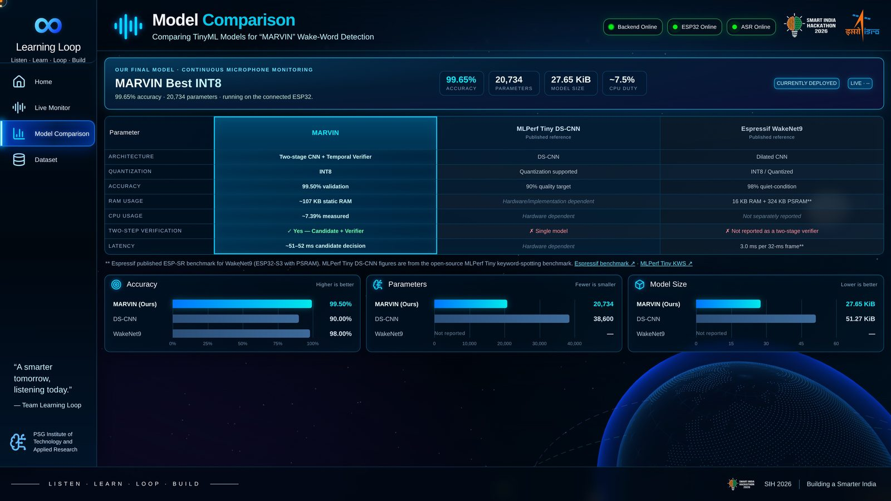
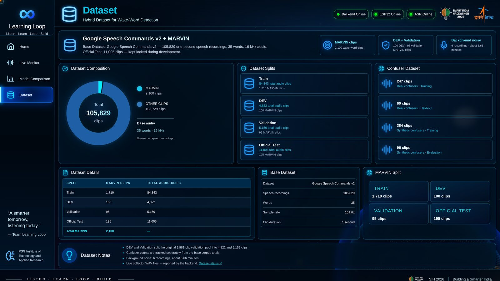

Measured results
Best INT8 model on the ESP32. All six on-device compliance targets were met.
ACCURACY
0%
PRECISION
0%
RECALL
0%
F1 SCORE
0%
INFERENCE LATENCY
0ms
per window, no accelerator
CPU USAGE
0%
listening continuously · 92 % headroom
RAM USAGE
0KB
of 320 KB SRAM · no PSRAM
Try the cascade
Pick something to "say". Watch it travel through the on-chip pipeline and see where it gets stopped. Scores are illustrative of the real behaviour.
MARVIN READY
SH1106 OLED · I²C
STATE MACHINE
IDLELISTENINGSTREAMING
Audio sent to cloud: 0 bytes
Hardware
The real prototype. Click the glowing points to explore each part.


End-to-end workflow
Everything inside the dashed boundary runs on the ESP32. The cloud is reached only after Stage-2 confirms the wake word.


Live dashboard
React + Three.js. Offline benchmarks are kept visually separate from live ESP32 telemetry.



